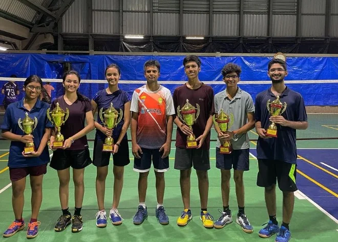
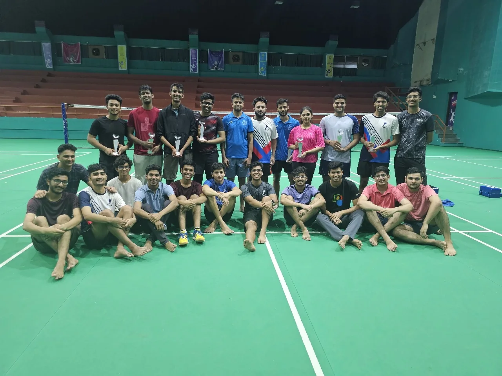
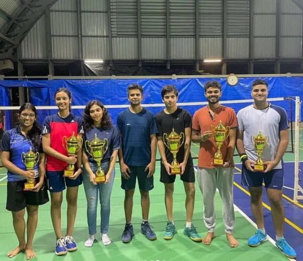

Indoor Badminton Hall
- 7 courts with professional synthetic flooring.
- Centralised air conditioning for comfortable year-round play.
- Dedicated changing rooms and equipment storage.
A first clear, a close rally, a doubles partner. Badminton brings precision and pace together. Explore the hall, equipment and campus competitions, and ask the team about current training and access.
Find your starting pointSpaces, equipment and practice.
Get to know what the sport offers.
Facility descriptions are from the institute’s October 2026 archive. Confirm current access, hours, equipment and coaching arrangements with the sports office.
Camps, institute competitions and ways to take part. Explore the activities described by the sports community.
These are archived activity descriptions, not upcoming fixtures. Ask the team about current dates, entry and eligibility.
The flagship open tournament of IIT Bombay Badminton, open to all campus residents. Players across skill levels compete across singles, doubles, and mixed doubles categories in a knock-out format.
A league-format tournament that ensures every registered team plays multiple matches. The IBL is designed to maximise court time and competitive experience across the semester.
The inter-hostel Badminton General Championship — the most hotly contested fixture on the campus badminton calendar. Hostels field squads in singles and doubles categories, with points feeding into the overall GC standings.
An open tournament exclusively for first-year students, giving freshers their first competitive badminton experience on campus in a supportive, high-energy environment.
The Post-Graduate General Championship — a dedicated inter-hostel badminton competition for PG students, mirroring the format of the main GC and running alongside the broader sports calendar.
An annual grudge match between graduating batches, where each year group fields its best players in a team-format showdown to claim bragging rights before graduation.
Historical results from the institute’s published source, preserved with their original years.
Boys: Silver
Girls: Silver
Girls: Bronze
Girls: Bronze
 Old SAC
Old SACAsk about getting started, current training, access or the right route into a team.
Contacts below are from the institutional snapshot of 18 October 2026. Confirm the current office-holder before reaching out.
Contact the sports office
Badminton, on campus.
Photographs from the archive.


Another way to play
Basketball ↗